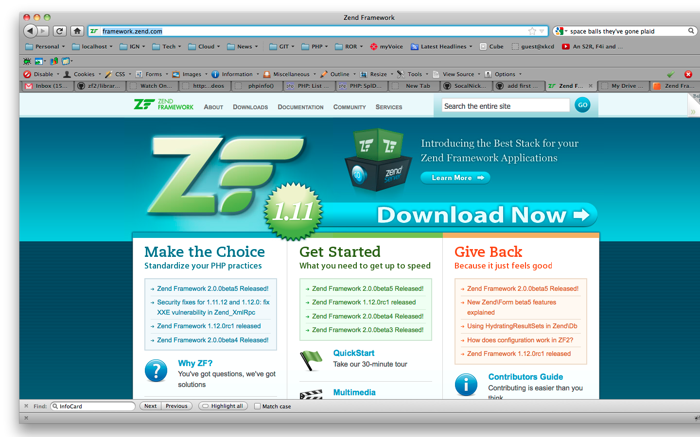

Code Foo
Code Foo
Zend Framework
A PHP Web Application Framework
About Zend Framework
Extending the art & spirit of PHP, Zend Framework is based on simplicity, object-oriented best practices, corporate friendly licensing, and a rigorously tested agile codebase.
More About Zend Framework
- Open Source PHP Library
- Born out of MWOP's PHp LibrarY
- Developed by Zend, the community, and other vendors (Google, Yahoo!, Adobe, Microsoft, etc)
- License based on new BSD license
- PHP 5.2.4 or later
- Object Oriented
- Web Application Framework
- Component Library = Loosely Coupled
- MVC Implementation
Zend Framework by the Numbers
- Over 10 Million Downloads
- Over 500 Contributors
- Over 1000 pages in our Reference Guide
- Over 500 Examples in our Reference Guide
- Almost 6 million hits on Google
- Over 900 hits currently on Technorati
- Over 120 projects based on, extending, or supporting Zend Framework at SourceForge
- Over 280 projects based on, extending, or supporting Zend Framework at Google Code
- Over 4000 resolved issues in our Issue Tracker
Models - The M in MVC
Classes that abstract and encapsulate business logic
-Nick
A domain model in problem solving and software engineering is a conceptual model of all the topics related to a specific problem. It describes the various entities, their attributes, roles, and relationships, plus the constraints that govern the problem domain.
Models in Zend Framework
ZF leaves this layer up to developer, but does provide several patterns to assist. Models are NOT simply reading / writing to DB, Models can be persisted in numerous ways.
Doctrine in ZF2
Doctrine can be integrated with ZF2 using a module. Doctrine is an ORM / ODM based on the Data Mapper pattern. Entities are managed by an Entity Manager, which uses the Unit of Work pattern to persist entities transparently and efficiently
Views - The V in MVC
- Defines what is presented to user
- Render data sent from Controller
- Accepts user input
- Likely contains HTML Markup
Controllers - The C in MVC
The "glue" of the MVC pattern.
More about Controllers
- Manipulate models
- Determine which view to display
- Could send JSON to respond to AJAX requests instead of sending HTML
- Most experts recommend keeping the Controller as "skinny" as possible
Resources
"Things" that need initialized every request and made available to the rest of the application through a resource registry.
Resources can be initialized using resource methods in your bootstrap class or using resource plugin classes. The latter is preferred for re-usability.
Zend_Application_Resource_Cachemanager
Can be configured to lazy load multiple types of caches, e.g. APC and Memcache
Zend_Application_Resource_Db
Initializes a single Zend_Db adapter
Zend_Application_Resource_Dojo
Used to configure the Zend_Dojo view helpers
Zend_Application_Resource_Frontcontroller
Probably the most common resource you will load as it is used to configure Zend_Controller_Front. This resource provides the ability to set arbitrary front controller parameters, specify plugins to initialize, and much more.
Zend_Application_Resource_Layout
Used to configure Zend_Layout
Zend_Application_Resource_Locale
Used to setup an application-wide locale which is then used in all components that work with localization or internationalization.
Zend_Application_Resource_Log
Configure a single Zend_Log with multiple writers
Zend_Application_Resource_Mail
Instantiate a transport for Zend_Mail
Zend_Application_Resource_Modules
Used to initialize your application modules.
Note: modules are one area that the Zend Framework developers acknowledge they didn't get quite right. Zend Framework 2 handles modules much better.
Zend_Application_Resource_Multidb
Initialize multiple Zend_Db adapters
Zend_Application_Resource_Navigation
Configure a Zend_Navigation instance
Zend_Application_Resource_Router
Used to configure the router that is registered with the Front Controller
Zend_Application_Resource_Session
Configure Zend_Session and optionally initialize a session SaveHandler
Zend_Application_Resource_Translate
Initialize a Zend_Translate adapter
Zend_Application_Resource_Useragent
This resource provides the ability to configure and instantiate Zend_Http_UserAgent for use within your application.
Zend_Application_Resource_View
Used to configure a Zend_View instance. It also creates a Zend_Controller_Action_Helper_ViewRenderer and registers the ViewRenderer with Zend_Controller_Action_HelperBroker
Autoloading in PHP
You may define an __autoload function which is automatically called in case you are trying to use a class/interface which hasn't been defined yet.
- PHP.net
Autoloading in Zend Framework
Defers class loading until the last possible moment = performance boost. It is recommended to strip out require_once from everything but Zend/Loader/Autoloader.php
PEAR naming conventions
"Foo_Bar_Baz" corresponds to "Foo/Bar/Baz.php" on the filesystem
Namespace Matching
- "Vendor" namespaces not PHP 5.3 namespaces
- Zend_ and ZendX_ by default
- Register other vendors, i.e. an Ign library
- Return FALSE as quickly as possible if not matched
Fallback autoloading
DON'T DO IT!!
Uses include() which will trigger a PHP Warning every time it fails
Toggle error suppression
DON'T DO IT!!
Write better code!
Other features
- Allow specifying custom callback for autoloading
- Allow manipulation of the SPL autoload callback chain (Add another loader before or after ZF autoloader)
Plugins
Plugins are classes
May need to extend abstract class or implement an interface, but they are still just classes
Common prefix
Related classes share common prefix e.g. a library containing view helpers could contain a number of classes with prefix "Foo_View_Helper_"
Everything after common prefix is the "short name" e.g. "Foo_View_Helper_Bar", short name is "Bar"
What if plugin not found?
Once stack of prefix paths is exhausted, Zend_Loader_PluginLoader_Exception is thrown
Why do you care?
Override a view helper to change how a form element is rendered:
$view->addHelperPath('foo/view/helpers', 'Foo_View_Helper');
What components have plugins?
- Zend_Application - resources
- Zend_Controller_Action - action helpers
- Zend_Feed_Reader - plugins
- Zend_Form - elements, filters, validators, decorators
- Zend_View - view helpers
Note: Zend_Front_Controller has a plugin system, but it is different. Plugins have to be registered individually.
That's all folks!
Nicholas Calugar
Senior Software Engineer
ncalugar@ign.com / njcalugar@gmail.com
twitter.com/socalnick
https://github.com/socalnick
More detail: http://goo.gl/b1FF0